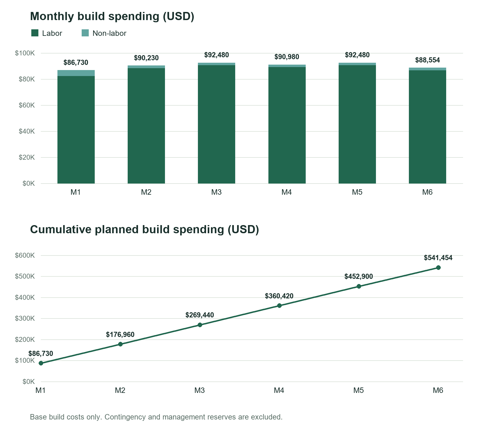

Sprint 2 document
Protect and track
Reserve for risk, phase spending over time, and check that the project still holds up against the plan.
9. Reserves
Expected monetary value (EMV) = probability × incremental cost impact. Our contingency reserve is the sum of the five risk EMVs: $22,500. All amounts are in USD; probabilities and recovery effort are planning assumptions, not measured failure rates.
| Risk | Chance | Cost impact and basis | EMV |
|---|---|---|---|
| A key developer leaves mid-project | 15% | $80,000: additional onboarding, knowledge transfer, and rework. | $12,000 |
| Launch cannot handle expected workload | 20% | $30,000: unplanned capacity adjustments and recovery beyond the capacity already budgeted. | $6,000 |
| Premium features are not developed in time | 5% | $30,000: 2 additional FTE-months × $15,000 for completion, integration, and regression testing. Lost revenue is not included. | $1,500 |
| Live feedback exceeds the latency target | 15% | $15,000: 1 additional FTE-month for profiling, buffering/rendering improvements, and latency retesting under normal load. | $2,250 |
| Webcam or device incompatibility | 10% | $7,500: 0.5 additional FTE-month for camera/browser compatibility fixes and device testing. | $750 |
| Contingency reserve: sum of EMVs | $22,500 | ||
Risk responses and triggers
| Risk / proposed owner | Prevention or mitigation | Trigger for review |
|---|---|---|
| Developer departure / technical lead | Document critical components, share code ownership, and keep onboarding notes current. | A departure notice or an unfilled critical development responsibility. |
| Launch workload / infrastructure lead | Plan self-hosted capacity at three times expected launch demand for the first launch month; load-test before release. Power down extra servers if sustained demand is low. | Load tests or launch monitoring show demand exceeding tested capacity. Confirm that planned headroom fits the infrastructure allocation before launch. |
| Premium delay / product lead | Prioritize the core premium scope and review feature completion each sprint. | A premium milestone slips or a required feature fails acceptance testing. |
| Latency / frontend and QA leads | Measure frame-capture-to-visible-feedback delay using simulated feedback; agree on a latency threshold before testing. | Measured delay exceeds the agreed target under normal operating load. |
| Compatibility / QA lead | Test supported browsers, camera permissions, and representative mobile and desktop devices early. | A supported device cannot reliably start the camera or display feedback. |
Planned mitigation belongs in the base estimate; risk impacts cover additional recovery only. Capacity, latency, and compatibility costs must not be charged twice for the same work. Powering down self-hosted servers reduces avoidable running costs, not hardware costs already incurred.
Reserve policy
| Policy | Contingency reserve | Management reserve |
|---|---|---|
| Covers | Identified risks in the risk register. | Unforeseen work within the approved project scope. |
| Inside the cost baseline? | Yes | No |
| Controlled by | Project manager, within approved authority. | Project sponsor, through change control. |
| Sizing formula | Sum of risk EMVs = $22,500. | 5% × $563,954 cost baseline = $28,197.70. |
| Release and tracking | Record the risk, approved response amount, date, and remaining reserve. | Require sponsor approval; document the baseline change and remaining reserve. |
10. Time-phase and check
Monthly labor = scheduled FTE × $15,000 per FTE-month. Recurring non-labor is $1,400 infrastructure + $330 tools per month. For this schedule, the $2,500 legal fee is placed in M1 and $124 app integration fees in M6.
| Month | FTE | Labor | Non-labor | Monthly total | Cumulative total |
|---|---|---|---|---|---|
| M1 | 5.50 | $82,500 | $4,230 | $86,730 | $86,730 |
| M2 | 5.90 | $88,500 | $1,730 | $90,230 | $176,960 |
| M3 | 6.05 | $90,750 | $1,730 | $92,480 | $269,440 |
| M4 | 5.95 | $89,250 | $1,730 | $90,980 | $360,420 |
| M5 | 6.05 | $90,750 | $1,730 | $92,480 | $452,900 |
| M6 | 5.78 | $86,700 | $1,854 | $88,554 | $541,454 |
| Total | 35.23 | $528,450 | $13,004 | $541,454 | $541,454 |
The monthly plan uses the rounded staffing allocations from Size the people. It phases base build costs only: reserves remain separately controlled until approved for use. Annual operating costs are separate and are not included in this build request.
Full build request
| Budget line | Calculation / basis | Amount |
|---|---|---|
| Labor | 35.23 FTE-months × $15,000 | $528,450.00 |
| Non-labor | $8,400 infrastructure + $1,980 tools + $0 incremental AI licenses + $124 app fees + $2,500 legal | $13,004.00 |
| Base build estimate | Labor + non-labor | $541,454.00 |
| Contingency reserve | Sum of five risk EMVs | $22,500.00 |
| Cost baseline | Base build estimate + contingency reserve | $563,954.00 |
| Management reserve | 5% × cost baseline | $28,197.70 |
| Total build request | Cost baseline + management reserve | $592,151.70 |
Budget checks and tracking
| Check | Result or tracking rule |
|---|---|
| Staffing and spending reconcile | Monthly staffing totals 35.23 FTE-months. Monthly labor totals $528,450 and non-labor totals $13,004; together they match the $541,454 base estimate. |
| Cost mix | Labor is 97.60% of the base estimate. Review the small non-labor allowance against the self-hosting and zero incremental AI-license assumptions. |
| Reserve traceability | The $22,500 contingency equals the five EMVs. Keep a reserve log with opening balance, approved draws, linked risks, and remaining balance. |
| Monthly spending and delivery | At each month-end, record actual spending, compare actual minus planned spending, and review accepted work and milestones. Positive spending variance means spending above plan; lower spending alone does not prove the project is ahead. |
| Forecast and approvals | Update the forecast as actual cost to date + estimated remaining cost. Review overruns and reserve requests with the project manager; escalate management-reserve use to the sponsor. |
This is a planning baseline, not a report of actual spending. Revisit risk probabilities, remaining work, and the launch capacity assumption at each monthly review.
Budget charts

